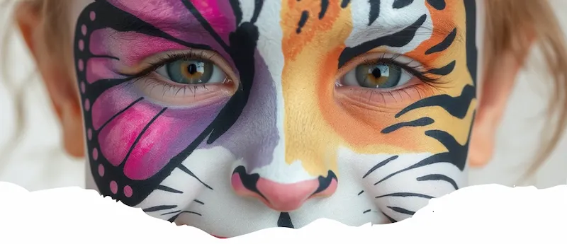

Jak připravit dětskou oslavu s malováním na obličej
Malování na obličej je ideální způsob, jak děti zabavit a vytvořit jim nezapomenutelný zážitek...
Profesionální facepainting pro děti i dospělé – Vsetín, Valmez a okolí!

Vítejte na Ksychtíkovo.cz – specialisté na malování na obličej a zábavné programy! Jsem profesionální malířka a své služby nabízím především v regionech Vsetín, Valašské Meziříčí, Rožnov pod Radhoštěm a Nový Jičín. Každý obličej je pro mě jedinečným plátnem, které rozjasní každou vaši akci[cite: 47, 48, 49].
Ať už chystáte dětskou oslavu, festival, školní den, firemní akci, nebo hledáte kreativní kurz pro děti i pedagogy – s námi to bude nezapomenutelný zážitek.
Prohlédněte si ukázky malování na obličej pro děti – nabízím motivy z pohádek, přírody, vesmíru i superhrdinů. Každý obrázek je ručně malovaný, zdravotně nezávadnými barvami a s citem pro detail. Ideální na dětské oslavy, festivaly, jarmarky i firemní akce. Více obrázků sledujte na Facebooku
...a mnoho dalších motivů!
💰 1 hodina: 1000 Kč
🗨️ Organizujete akci bez rozpočtu? Nevadí – mohu přijet i bez nároku na honorář, rodiče si malování pro své děti hradí přímo na místě.
Malování na obličej je ideální způsob, jak děti zabavit a vytvořit jim nezapomenutelný zážitek...
Firemní večírek nemusí být nudný. S profesionálním malováním na obličej dodáte akci zábavný nádech...
Od Spidermana po jednorožce – oblíbené motivy se mění. Mrkněte na náš přehled...
Věděli jste, že Halloween je jediný den v roce, kdy je společensky přijatelné chodit po ulici jako zombie, upír nebo oživlá dýně a ještě za to dostanete bonbóny?
„Neděláme jen malování na obličej, ale i Dutch hair extensions“ = tedy barevné copánky napletené do vlasů.
...
Den Země je svátkem přírody, ale co kdyby se z něj stal i svátek barev?
Proč je malování na obličej ideální pro hasitské,myslivecké a akce na vesnici?
To vše pod jednou "střechou"
Michaela Podmolová
📞 Telefon: +420 728 500 091
📧 Email: podmolovam@gmail.com
„Děti byly nadšené z malování na obličej, hlavně Batman a motýlci měly úspěch. Moc děkujeme za skvělou atmosféru a profesionální přístup.“
– Maminka Eva ⭐⭐⭐⭐⭐„Ksychtíkovo nám malovalo na dětském dni v domově a děti byly ochotné i postavit stan – super tým a pohoda na akci.“
– Organizátorka Jana ⭐⭐⭐⭐⭐„Havajský fotokoutek byl perfektní doplněk a malování na obličej mělo velký úspěch nejen u dětí, ale i u dospělých.“
– Pavel, akce ve Valašském Meziříčí ⭐⭐⭐⭐⭐Malování na obličej v podání Ksychtikovo.cz je profesionální služba, která klade důraz na maximální bezpečnost a uměleckou kvalitu. Používáme výhradně profesionální antialergenní barvy s certifikací pro dětskou pokožku, které jsou snadno smývatelné vodou a mýdlem. Jedno malování trvá v průměru 5 až 8 minut v závislosti na složitosti motivu (od rychlých spider-manů po detailní princezny). Naše služby jsou ideální pro dětské oslavy, firemní dny a veřejné akce v regionu Zlín, Vsetín a po celém Valašsku.
Ksychtíkovo, Lešná 169, 756 41, IČO:23249943
⬆️ Zpět nahoru Google recenze
Google recenze
 Firmy.cz recenze
Firmy.cz recenze